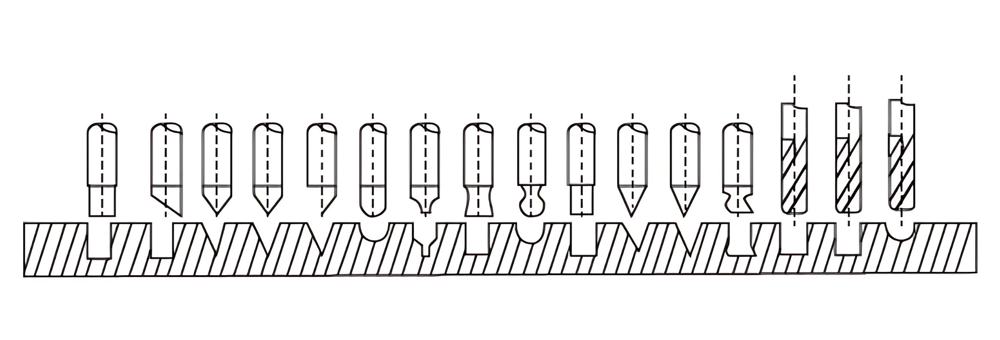

Afiadora Universal
Afiadora Universal é...
A afiadora universal é uma máquina versátil utilizada principalmente em oficinas e indústrias para afiar e recondicionar ferramentas de corte, como fresas, brocas e alargadores. Ela permite a afiação precisa de diferentes ângulos e perfis, sendo essencial para manter a qualidade e a vida útil das ferramentas. A afiadora universal oferece grande flexibilidade, podendo ser ajustada para diversas operações de afiação, o que a torna indispensável para quem busca precisão e eficiência na manutenção de ferramentas de corte em processos de usinagem.
Diferencias da nossa Afiadora Universal
Os três pilares da venda.
Preço
Em comparação com o mercado, nós estamos cerca de 17,19% (1.651,52) abaixo da média dos nossos concorrentes.
Componentes
Nosso modelo de afiadora, possui acessórios que outros não possui, como por exemplo: Rebolo Diamantado, Correia, Caixa de Madeira, dispositivos para afiação lateral.
Marca
Cpentes podem preferir pagar mais por uma marca confiável. Nós trabalhamos com uma marca que possui uma trajetória de 16 anos no mercado e tem muita referência, ao contrário de outras que nem existem no Google.
